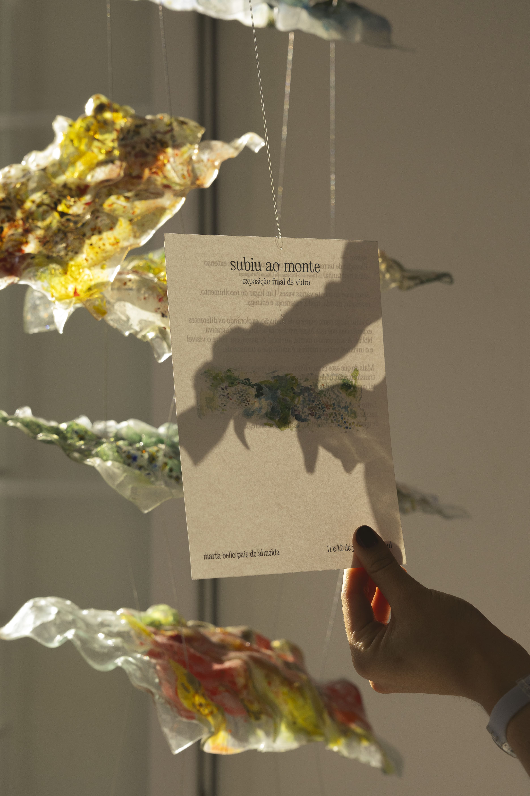
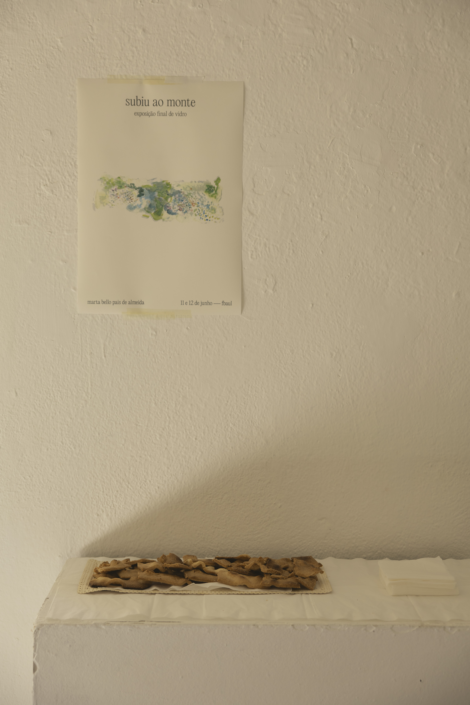
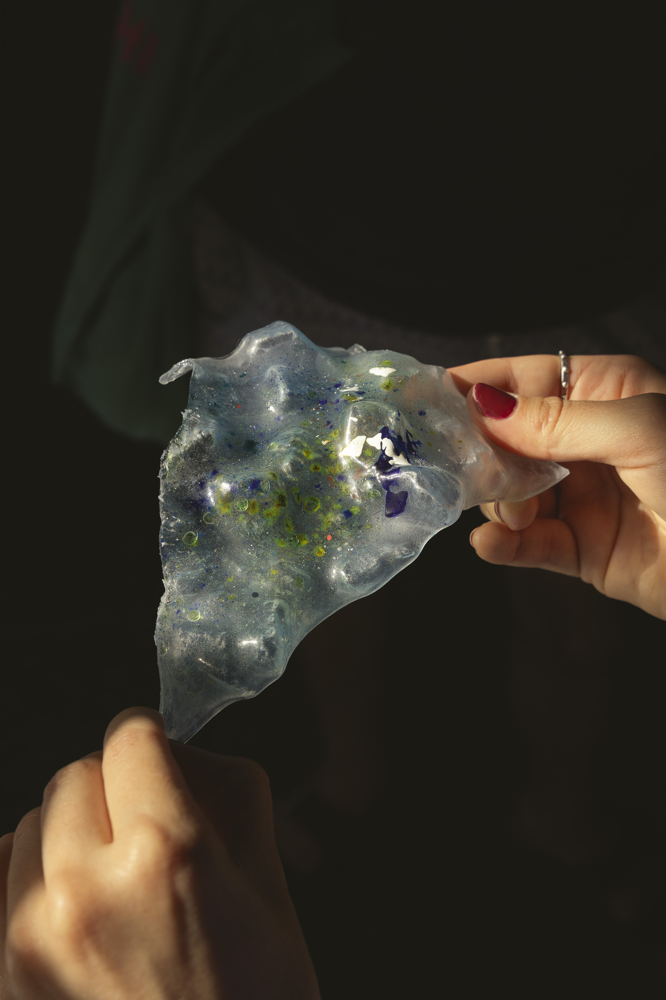
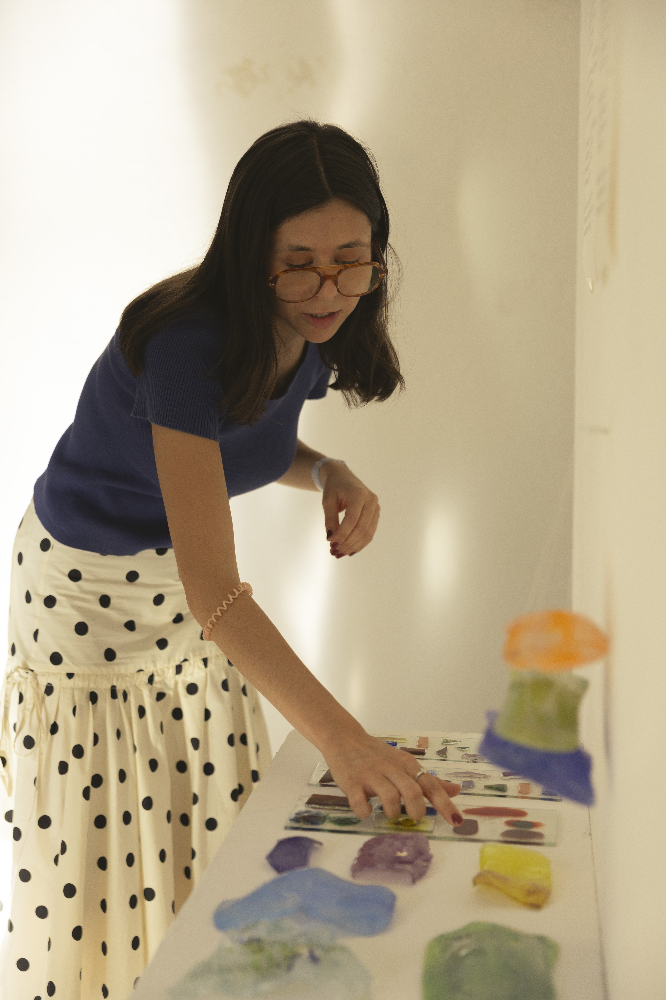
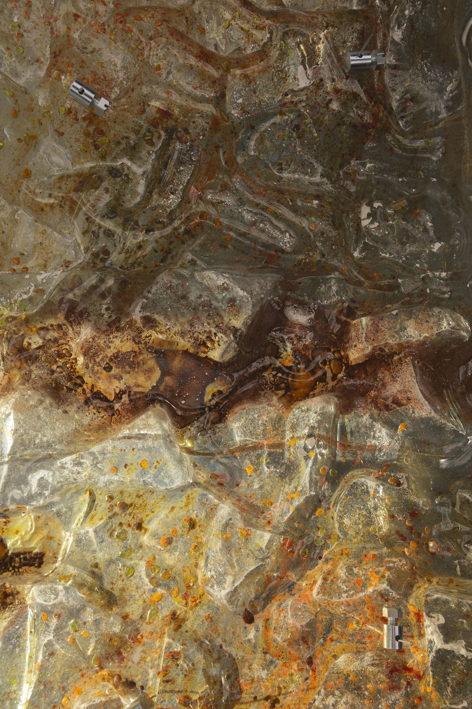
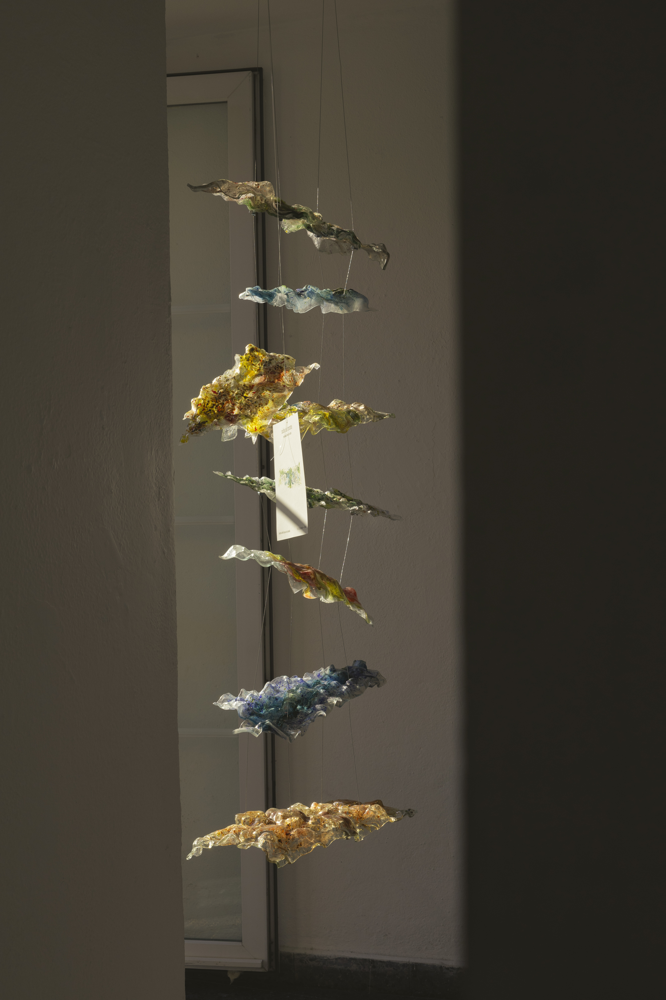
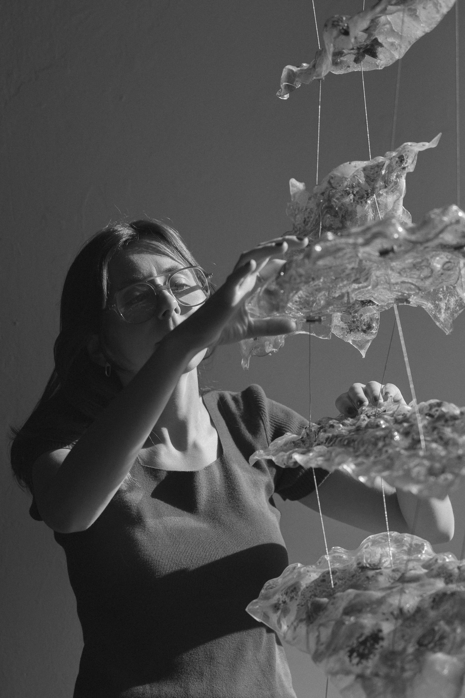
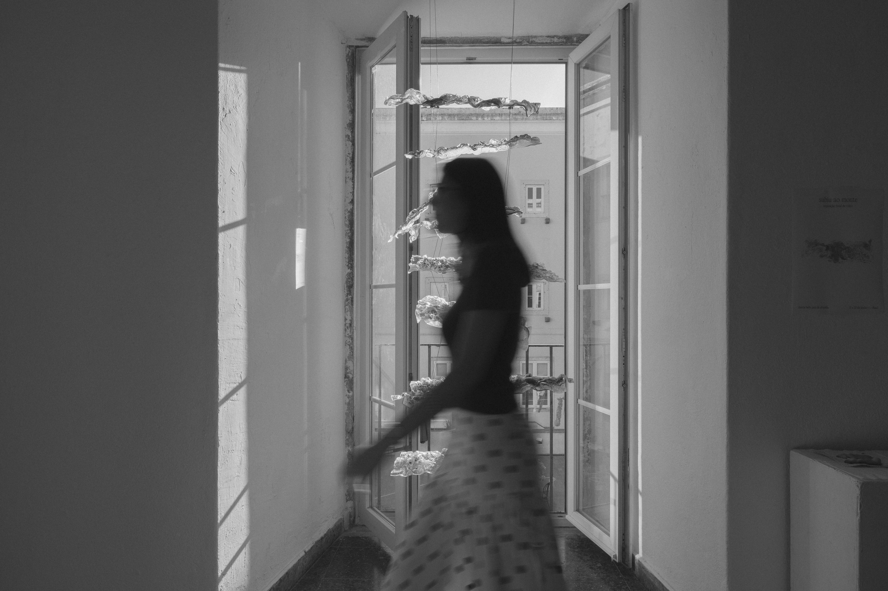

subiu ao monte
subiu ao monte is an exhibition developed at the Faculdade de Belas-Artes da Universidade de Lisboa, presented in June 2026: my first exhibition, and a deeply meaningful one.
Jesus ascends the mount many times. A place of retreat, revelation, doubt, fear, hope, and surrender — each ascent carrying its own interior register, each one a threshold rather than a destination. Glass emerges as a material of translation: an attempt to render visible the emotions the mount itself carries. Capable of absorbing marks, filtering light, and holding depth, the process began not to represent the mount as form, but to approach what happens within the experience of ascent. Colour as emotional intensity; relief as resistance or tension; the space between surfaces as silence, or suspension.
Working through successive experiments and layered compositions, the piece builds a visual language for states that resist fixed images. The heat, the gravity, the unpredictability of the material were determinant, producing a structure that, like the mount itself, remains in constant reading.
Credits: Sofia Semedo, Photographer








